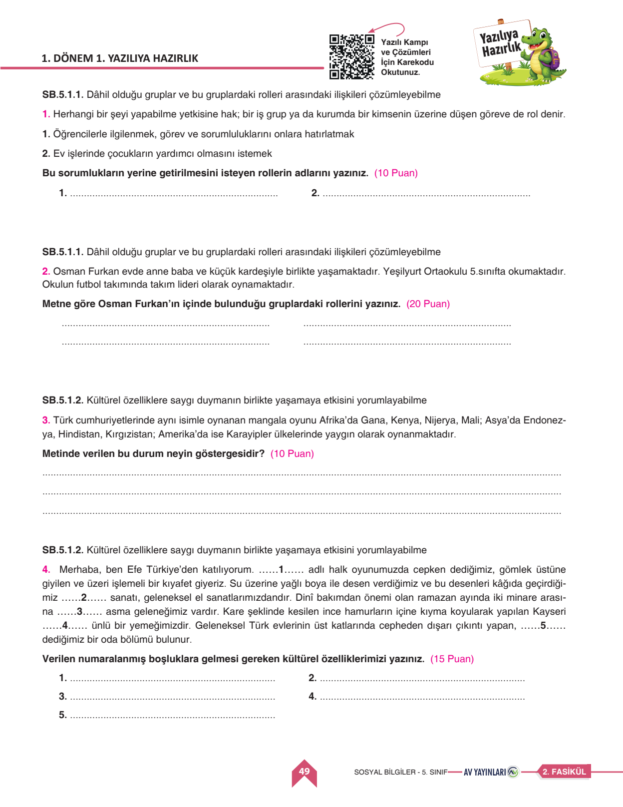
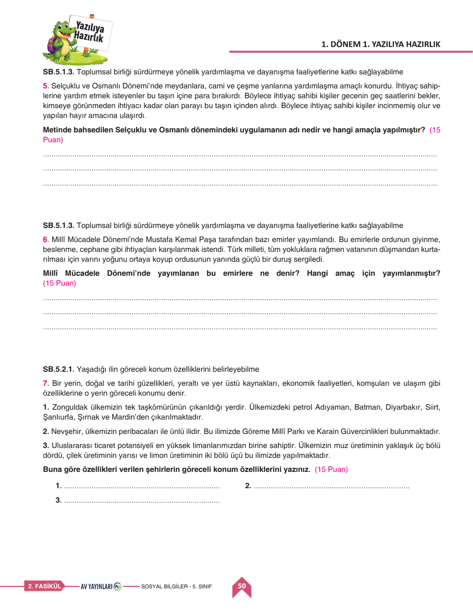
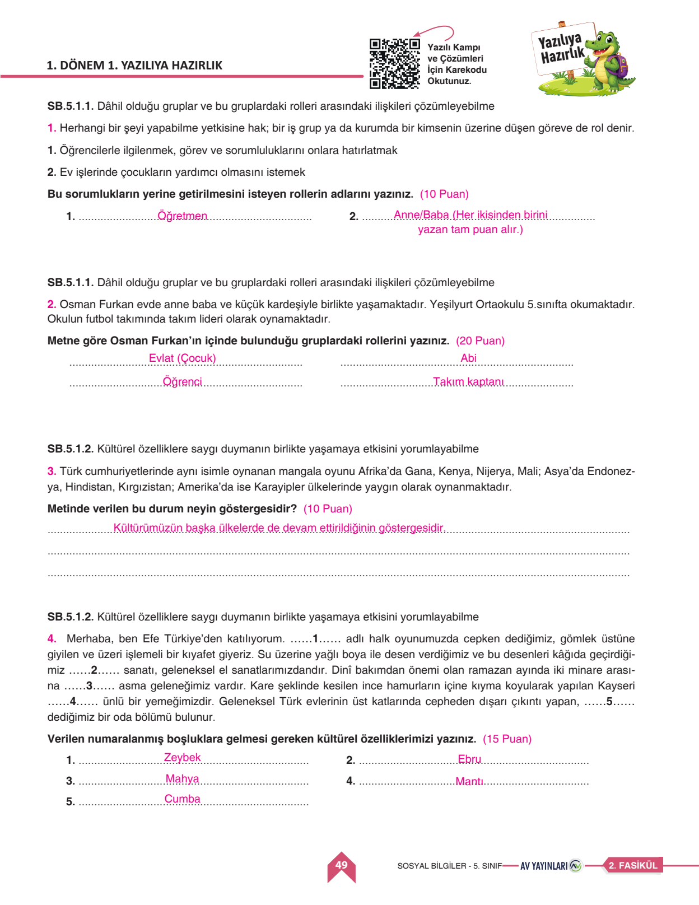
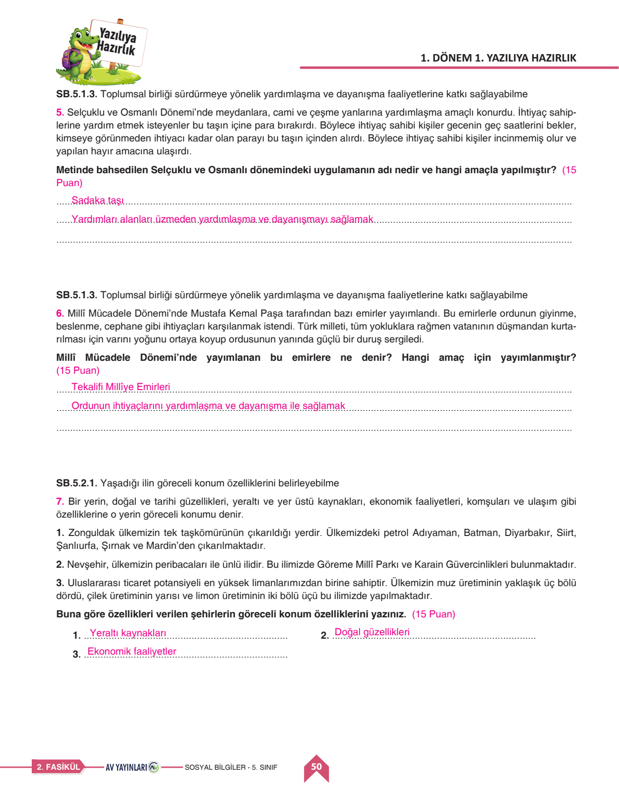

🌍 5. Sınıf Sosyal Bilgiler 1. Dönem 1. Yazılı
Roller & Sorumluluklar • Kültürel Miras • Sadaka Taşı • Tekalif-i Milliye • 7 Sorunun Tamamı
0
Mevcut Puan / 100

Soru 1
Hak ve Rol Tanımları
10 Puan
📌 Öğretmen Çözümü & Model Cevap:
1. Öğrencilerle ilgilenmek: Öğretmen rolü
2. Ev işlerinde çocukların yardımını istemek: Anne / Baba rolü
2. Ev işlerinde çocukların yardımını istemek: Anne / Baba rolü
Bu sorudan aldığın puan:
Soru 2
Osman Furkan'ın Gruplardaki Rolleri
20 Puan
📌 Öğretmen Çözümü & Model Cevap:
• Aile Grubunda: Evlat (Çocuk) ve Abi rolü
• Okul Grubunda (5. Sınıf): Öğrenci ve Sınıf Arkadaşı rolü
• Futbol Takımında: Takım Kaptanı (Lideri) rolü
• Okul Grubunda (5. Sınıf): Öğrenci ve Sınıf Arkadaşı rolü
• Futbol Takımında: Takım Kaptanı (Lideri) rolü
Bu sorudan aldığın puan:
Soru 3
Mangala Oyununun Farklı Kıtalarında Oynanması
10 Puan
📌 Öğretmen Çözümü & Model Cevap:
Açıklama:
Kültürel miras ögelerimizin evrenselleştiğini, farklı coğrafya ve kıtalardaki toplumları ortak bir eğlence ve zekâ oyunu etrafında birleştirdiğini, kültürel etkileşim ve zenginliğin kanıtı olduğunu gösterir.
Kültürel miras ögelerimizin evrenselleştiğini, farklı coğrafya ve kıtalardaki toplumları ortak bir eğlence ve zekâ oyunu etrafında birleştirdiğini, kültürel etkileşim ve zenginliğin kanıtı olduğunu gösterir.
Bu sorudan aldığın puan:
Soru 4
Kültürel Değerlerimiz ve Geleneklerimiz
15 Puan
📌 Öğretmen Çözümü & Model Cevap:
1. Cepken giyilen halk oyunu: Zeybek
2. Su üzerine yağlı boya sanatı: Ebru
3. İki minare arasına asılan ışıklı yazı: Mahya
4. Kayseri'nin ünlü yemeği: Mantı
5. Evlerin dışarı çıkıntı yapan oda bölümü: Cumba
2. Su üzerine yağlı boya sanatı: Ebru
3. İki minare arasına asılan ışıklı yazı: Mahya
4. Kayseri'nin ünlü yemeği: Mantı
5. Evlerin dışarı çıkıntı yapan oda bölümü: Cumba
Bu sorudan aldığın puan:

Soru 5
Sadaka Taşı Uygulaması ve Amacı
15 Puan
📌 Öğretmen Çözümü & Model Cevap:
• Uygulamanın Adı: Sadaka Taşı
• Yapılış Amacı: İhtiyaç sahiplerini ve yoksul insanları incitmeden, mahcup etmeden, gece karanlığında gizlice ihtiyaçları kadar parayı almalarını sağlayarak toplumsal dayanışmayı en asil şekilde yaşatmaktır.
• Yapılış Amacı: İhtiyaç sahiplerini ve yoksul insanları incitmeden, mahcup etmeden, gece karanlığında gizlice ihtiyaçları kadar parayı almalarını sağlayarak toplumsal dayanışmayı en asil şekilde yaşatmaktır.
Bu sorudan aldığın puan:
Soru 6
Tekalif-i Milliye Emirleri
15 Puan
📌 Öğretmen Çözümü & Model Cevap:
• Emirlerin Adı: Tekâlif-i Millîye Emirleri
• Amacı: Sakarya Meydan Muharebesi öncesinde ordunun giyecek, yiyecek, silah, cephane ve taşıt ihtiyaçlarını halkın fedakârlığı ve yardımlaşması ile temin etmektir.
• Amacı: Sakarya Meydan Muharebesi öncesinde ordunun giyecek, yiyecek, silah, cephane ve taşıt ihtiyaçlarını halkın fedakârlığı ve yardımlaşması ile temin etmektir.
Bu sorudan aldığın puan:
Soru 7
Şehirlerin Göreceli Konum Özellikleri
15 Puan
📌 Öğretmen Çözümü & Model Cevap:
1. Zonguldak (taşkömürü & petrol): Yeraltı Kaynakları (Madenler)
2. Nevşehir (Peribacaları, Göreme): Doğal ve Tarihî Güzellikler (Turizm)
3. Mersin (Uluslararası liman, muz ve limon üretimi): Ekonomik Faaliyetler, Ulaşım ve Tarım
2. Nevşehir (Peribacaları, Göreme): Doğal ve Tarihî Güzellikler (Turizm)
3. Mersin (Uluslararası liman, muz ve limon üretimi): Ekonomik Faaliyetler, Ulaşım ve Tarım
Bu sorudan aldığın puan:


👥 1. Hak, Sorumluluk ve Roller
- Hak: Kanunların bireye tanıdığı yetkilerdir (sağlık, eğitim hakkı).
- Sorumluluk: Bireyin üzerine düşen görevleri yapmasıdır.
- Bir kişi aynı anda ailede çocuk, okulda öğrenci, sporda kaleci olabilir.
🤝 2. Dayanışma Kurumları
- Sadaka Taşı: İhtiyaç sahiplerini incitmeden yapılan gizli yardımlaşmadır.
- Tekâlif-i Millîye: Millî Mücadele'de ordunun donatılması için halkın yaptığı fedakârlıklardır.